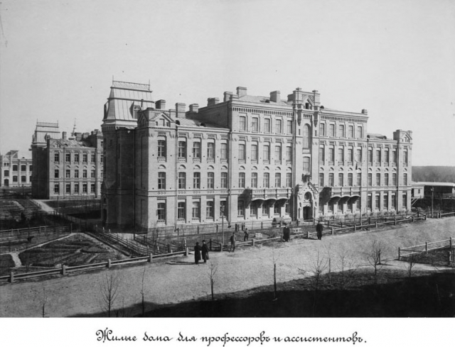

|

The idea of establishment of technical educational institution occurred
to sugar mill workers of south-west regions. On 18th of January 1880
with the active support of the head of Kyiv exchange committee N.
Hryakov it was decided to open the subscription for donation-raising.
Raising money, guaranteed the contributions of Kyiv patrons and support
from the Minister of Justice I. Witte who allowed to make a decision on
25th of November 1896 on private meeting in L.I. Brodskyi’s house to
establish Kyiv Polytechnic Institute.
Under the voting of S.M. Solskogo (Kyiv mayor) and with the
participation of local authorities representatives, South-west railroad
administration, engineers and manufacturer The Protocol that “comprises
actually first practical document in the history of higher technical
education institution in the Kyiv city” was ratified. “The most accepted
type of the new educational institution should de denoted as Polytechnic
institute type, which consists of several departments of various
specialties, as in polytechnic school of Zurich, Karlsruhe, Munich,
Vienna, Hannover, Aachen, Dresden, Riga etc” was noted in this document.
The main building is the letter from the beginning of the last century.
Special committee for solving organizational issues , headed by
general-governor of South-west region count O.P. Ignatyev, was created
by order of manufacture and trade department of Ministry of Finance. For
the establishment of the institution were raised voluntary donations
total cost of which was 1 000 374 karbovantsiv, while the cost of
building and outfitting was 2 650 000 karbovantsiv. Among organizations
and people, who donated money were: Kyiv city Duma – 300 000
karbovantsiv, Tereshenko and sons – 150 000 karbovantsiv, L. Brodskyi –
100 000 karbovantsiv, Kyiv land bank – 15 000 karbovantsiv, Krasiliv
sugar factoy Company – 2 000 karbovantsiv, totally 139 companies, banks,
factories, institutions, several people.
Famous architects took part in the contest of Polytechnic institute
building projects: Benua, Gogen, Kitner, Kobelev, Pomerancev, Cender and
Shreter. The best one was prof. I.S. Kitner’s project, for which
buildings of Kyiv polytechnic institute were built. As he lived in St.
Petersburg and couldn’t run working process directly, the work was
headed by architect O.V. Kobelev. After precise acquaintance the area of
38 dissipations along Brest- Lithuanian highway was chosen.
On 31st of August 1898 Kyiv polytechnic institute was opened, where the
head of trade and manufacture Department announced Great behest apropos
of this.
4 departments were denoted: mechanical (109 students), engineering (101
students), agricultural (87 students), chemical (63). First enrolments
were announced in June 1898. According to the Regulations, all comers,
who had certificates from grammar school, real colleges or other
secondary schools that are equal to grammar schools, were allowed to
take the examinations. Entrants from other universities were enrolled
out of competition. 1100 applications for 330 places were submitted. The
examinations in mathematics, physics and Russian language were
successfully passed by more entrants than it was predicted. By
intercession of university board, Ministry of finance allowed to enlist
30 more entrants.
Studies began at 1st of September at the apartment, which was built for
commercial college (Vorovskogo street), which was rented by university
for one year. After finishing the building (April 1902) institute had a
full complex of buildings: main building - engineering, mechanical and
agrieconomic departments, chancery, fundamental science-technical
library; chemical building - chemical department; mechanical workshops
with central power station for lighting of all buildings and heating of
the main building; field research buildings, yard for livestock,
agricultural farm and garden; living quarters for professors and
laboratoriants - 2 buildings; canteen.
V.L. Kirpovich was appointed for the first head of KPI, being a
specialist in the sphere of organization and establishment of higher
education institutions. Leading figures of science D.I. Mendeleev, M.E.
Jukovskyi, K.A. Temirayzev and others gave science methodical support in
organizing and establishment of the university. Pedagogical group of KPI
was first to introduce the competition to order of appointment for
professors of departments exceptionally from persons, who has a degree.
It was the most appropriate method of staffing the departments by
highly-qualified specialists. For working in the institute many famous
scientists from Kyiv, Moscow, Petersburg, Kazan, Kharkov were invited.
There were prominent specialists in theoretical mechanics O.P.
Kothelnikov and O.M. Dinnik, mathematics V.P. Ermakov and B.Y. Bukreev,
one of the founders of theory of metal cutting K.O. Zvoriking,
geologist-mineralogist O.V. Nechaev, famous scientist, metallurgist V.P.
Ijevskyi, heating engineer O.O. Radzig, prominent specialist in bridge
building E.O. Paton, gifted chemists M.I. Konovalov and
L.V.Pasarjevskyi, architecture academician O.V. Kobelev, artst M.K.
Pimonenko. Later world famous scientists mechanics S.P. Timoshenko, K.K.
Siminskyi, S.V. Serensen and others were invited for teaching at the
institute.
First head of KPI State examination board in 1903 was D.I. Mendeleev.
Only 93 graduates received the certificates - it was very hard to study,
especially payment, revolution were expanding. First graduates of KPI
were presented with breast Toksnof graduate along with certificates.
Already from 1899 the movement for creation of fifth, aeronautic
department of KPI began and it was leaded by one of the biggest
enthusiasts of aviati8n professor Mykola Artsmiyev, talanted apprentice
of Mykola Jukovskyi. From his initiative aeronautic section within KPI
mechanical club was organized in 1905-1906. Professor Stepan Timoshenko
became the first honorable chief of section and student of mechanic
department Victorin Bobrov became its vice-chief. In September 1908
section was reorganized into aeronautic club with airplanes,
helicopters, and engines departments. KPI professor Mykola Delone (son
of the pioneer of aviation Boris Delone) was passionate propagandist of
aviation and gliding idea, who became one of the founders of Kyiv
aeronautic community (KAC). Exactly KAC was the first aviation nucleus,
in work of which participated professors, engineers, constructors and
KPI students who were speaking with lectures on aviation, building and
testing flying vehicles, gliders.
Inalienable page of KPI history is its participation in antidemocratic
movement of the country, which was performed under slogan of
democratization of high schools, freedom of students communities.
Already in spring 1899, i.e. at first year of existence of university,
its alumni took part in All-Russian student strict, directed against
reaction Policy of government. Governments answer was expulsion,
detention and exile of 32 students - organizers and active participants
of the strike. But it was not the last student riot and students were
participating in all tempestuous events of the beginning of 20th
century.
In the summer of 1918 the fifth faculty was created – the electro
technical. Classes at the institute stopped and continued in correlation
to the progress of the war in Kiev. Social transformations of the
country were equally represented in the fundamental changes of the
university governance principles.
After the revolution and civil war it was imperative to rebuilt the
economy of Ukraine, and a number of industries had to be created or
restored, among them: machine-building engineering, machine tool
engineering, automotive industry, chemical industry, defense sector,
tractor engineering, metallurgy and others, it was necessary renew the
old and build new businesses and technically re-equip them. To meet
these requirements of the national plan the engineering intellectuals
had to be trained in a short period of time. This important task was
entrusted on different universities of the country including the Kyiv
Polytechnic Institute, which was renamed to Industrial in 1934.
In June in 1941 KPI concluded 43 th academic year. The Institute had
3,000 students, more than 300 faculty members and the total number of
the institute staff was about 5,000 people. Like in other universities,
graduates defended their diploma works and received a job, students of
the senior courses had manufacturing practices in various cities of the
country, students of the junior courses had bridging exams. The War
united everybody with a common goal - protecting the homeland.
From the first days of the war, many lecturers and staff, graduates and
students of the institute voluntarily and through mobilization joined
the Red Army. They took part in the fighting on all fronts of the World
War II. Graduates of the institute, who remained on the occupied
territories participated in the underground and guerilla struggle.
Late in June 1941 the Institute received orders to prepare for
evacuation to Tashkent, where it functioned as a part of the Central
Asian Industrial Institute.
The liberation of Kyiv in November 1943 made it possible to reopen the
institute: began the registration of the faculty members, staff and
students that returned to the Institute. In the second half of January
1944 the Selection Committee started its work of accepting first year
students and renewal of the senior course students. All efforts of the
institute was aimed at restoring educational material basis, because as
a result of Nazi occupation and fierce battles for Kyiv more than a half
of the total area of classrooms were destroyed, dormitories were burnt
down and other property was looted. Because the Institute was included
in the list of the most important industrial and transport universities
of the country, students of all courses were exempted from draft into
the Soviet Army and also were provided increased stipend (that concerned
primarily students who studied foundry, forging, pressing and chemical
production). Since the reconstruction works terms were constantly
violated, in the summer of 1945 the students and teachers volunteered to
do all urgent works during their month of holiday vacation.
To improve the quality of training, the scientific research work and
involvement of students, especially of the senior year, had great
importance. The basic form of their involvement in research during the
postwar years were scientific groups, and on its basis in April 1946 the
student science and technology community was created. At the time of
creation it had nine sections, which have united 30 groups of different
specialties and about 500 students. The groups were directed by leading
scientists of the institute.
|